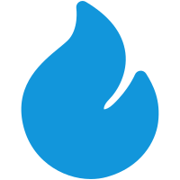

功绩史卷 · 初入新朝
《纳谏成章》
陛下没有急着独断，而是在第一周先识别 mentor、同组前辈和数据口径的主人。若此势延续，未来一月的功绩不在“做了多少杂事”，而在“遇事知道问谁、如何问、何时同步风险”。此卷依据仍浅，只能说明协作路径正在成形，不能判断他人一定给出支持。

依据未竟之事，推演条件成立后的可能走向
下周的主线会更早被看见，延期风险下降一档。收益不在立刻增加金币，而在减少周一重新判断方向的消耗。
陛下没有急着独断，而是在第一周先识别 mentor、同组前辈和数据口径的主人。若此势延续，未来一月的功绩不在“做了多少杂事”，而在“遇事知道问谁、如何问、何时同步风险”。此卷依据仍浅，只能说明协作路径正在成形，不能判断他人一定给出支持。